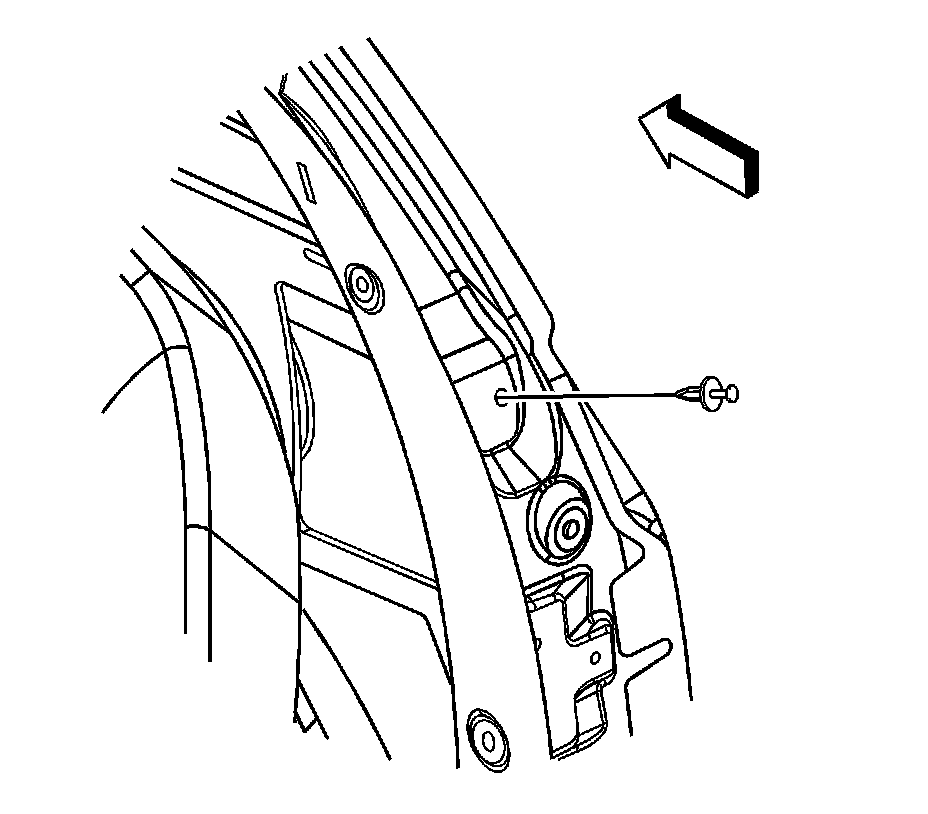
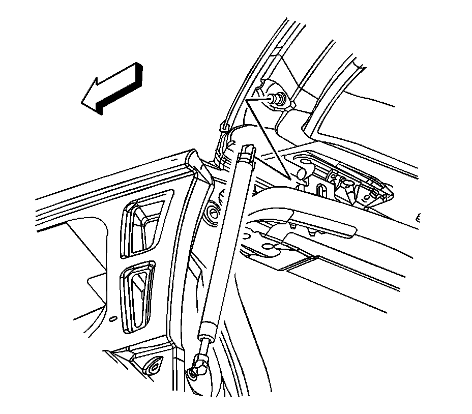

Liftgate Strut Ball Stud Replacement
Liftgate Strut Ball Stud Replacement
Removal Procedure
1. Open and support the liftgate.

2. Remove the assist rod. Refer to Liftgate Strut Replacement (Service and Repair) .
3. Remove the lower liftgate assist rod ball stud from the vehicle.

4. Remove the upper liftgate assist rod ball stud from the liftgate.
Installation Procedure
Notice: Refer to Fastener Notice (Fastener Notice) .
1. Install the upper assist rod ball stud to the liftgate.
Tighten the upper liftgate assist rod ball stud to 25 N.m (18 lb ft).
2. Install the lower ball stud to the gutter.
Tighten the lower liftgate assist rod ball stud to 25 N.m (18 lb ft).
3. Install the assist rod. Refer to Liftgate Strut Replacement (Service and Repair) .